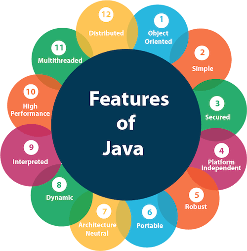

Quiz 1: Introduction to Java
Christopher Balana | BSIT 2-5
Score for this quiz: 22 out of 30
Submitted Mar 3 at 3:20pm
Explanation & Reflection:
The quiz tested my knowledge of the introduction to the Java programming language. It was easy for me because it focused on concepts rather than coding. Sir Bedis made it even simpler by designing the quiz as multiple choice, with a few identification and true-or-false questions. Overall, I learned a lot about the basics of Java, and the experience was both fun and enjoyable.
The part that struct me the most is the features of Java. Compared to other programming languages, Java is object-oriented, a paradigm based on the concept of "objects". It contain data (attributes) and code (methods) that operate on that data.
It’s also simple enough for beginners to pick up quickly, yet powerful enough for advanced projects. One of its biggest strengths is being platform-independent—you can write code once and run it anywhere with a JVM. Java is also secure and robust, designed to handle errors gracefully and protect against vulnerabilities. Features like multithreading allow programs to run multiple tasks at the same time, while being distributed means it can work across networks, which is essential for modern applications. Add in portability, architecture neutrality, and high performance, and you get a language that’s flexible, reliable, and efficient.
